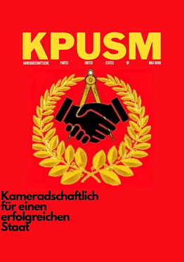
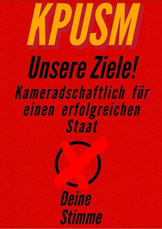
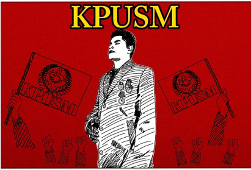

Parteien
Bereits bestehende Parteien der United States of Max Born:
Im Vorfeld der Wahlen am 19. Februar möchten wir euch hier die bereits bestehenden Parteien vorstellen, um diese näher kennenzulernen.
„Kameradschaftliche Partei der United States of Max Born“ (KPUSM)
Die „älteste“ Partei der United States of Max Born ist die KPUSM um ihren großen Vorsitzenden Vincent (9a). Bei der KPUSM steht die Kameradschaft innerhalb des Staates an erster Stelle. Engagiert, volksnah und stärkenorientiert – das ist die KPUSM
  